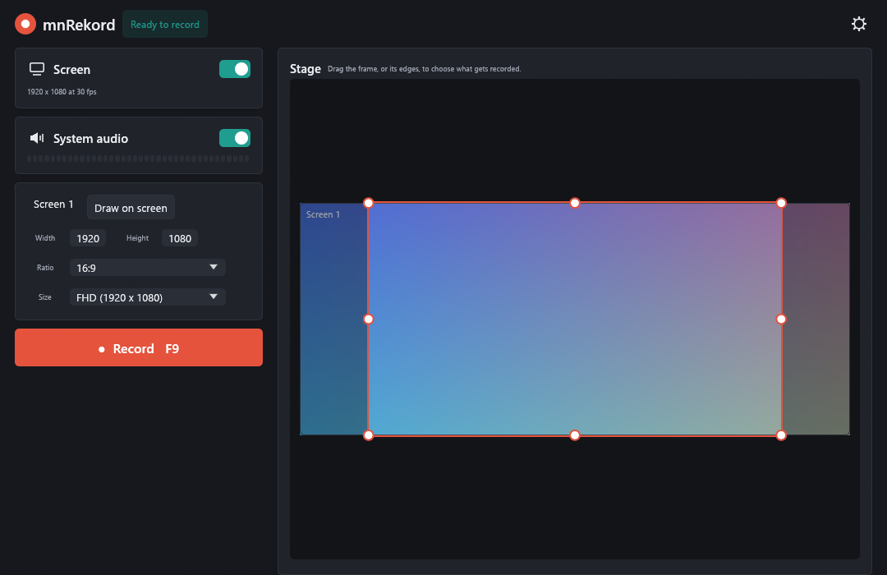
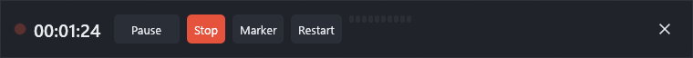
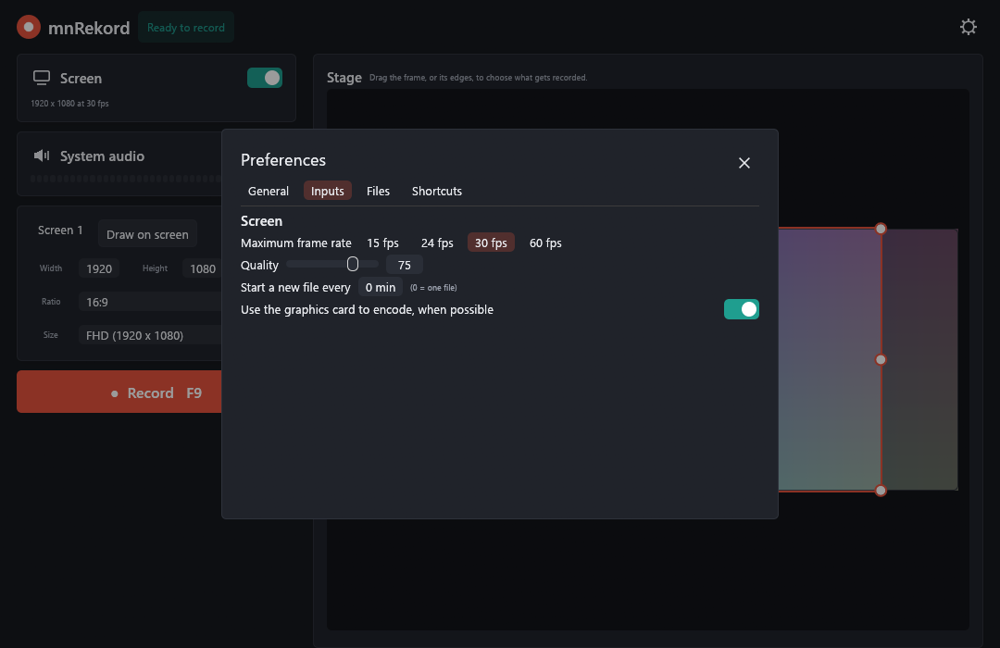
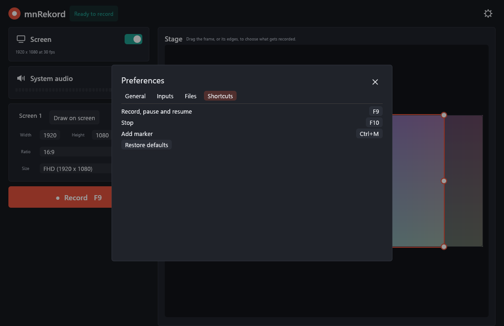

Record your screen.
Nothing in the way.
mnRekord is a small, dark screen recorder for Windows. Pick a region, a monitor or a window, press F9, and get an MP4 with the sound of your computer.

What it does
The things you need to make a tutorial, a bug report or a quick clip, and little else.
Region, monitor or window
Drag a frame on a live preview of your desktop, click a window, or draw a rectangle right on the screen with a magnifier.
Aspect ratio lock
16:9 or 9:16, with ready sizes from 360p to 4K UHD. Handles keep the ratio and never get stuck.
Follow a window
Move the window while you record and the picture stays on it.
System audio
Records what you hear, as AAC, in step with the picture, with a level meter.
H.264 with a quality slider
Quality from 1 to 100, 15 to 60 fps, GPU encoding when available. Plays everywhere.
Pointer highlight
A soft halo around the pointer and a ring on clicks, so viewers can follow you.
Pause, markers, parts
Pause and resume, drop markers into a text file, and split long recordings into parts.
GIF in one click
Turn the last recording into an animated GIF.
Crash recovery
The file is written in fragments. After a crash, mnRekord offers to keep what was recorded.
Shortcuts, tray, command line
Global shortcuts, a tray icon with a menu, and commands you can script.
One small file
A single exe of about 7 MB, written in Rust. No account, no cloud, no ads.
MIT license
Free to use and to change. The source is on GitHub.
How it works
From start to saved video in a few clicks.
- Choose what to record. Drag the frame, click Screen 1, or use Draw on screen to click a window.
- Pick a size. Set the ratio (16:9, 9:16 or free) and a size such as FHD.
- Record. Press F9. After a 3-2-1 countdown a slim bar replaces the window.
- Stop. Press F10. The MP4 is saved and opens in your player.

Set it up your way
Frame rate, quality, file names, shortcuts and folders are in the preferences.


Get it
Windows 10 or 11, 64-bit. Download the installer, or the single exe, from the latest release.
Build it yourself:
git clone https://github.com/miklosnemeth/mnRekord
cd mnRekord
cargo build --release